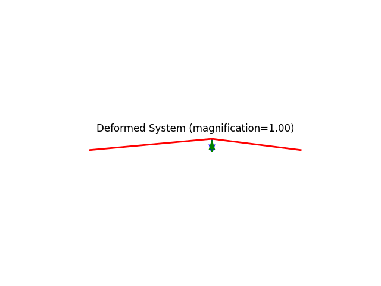
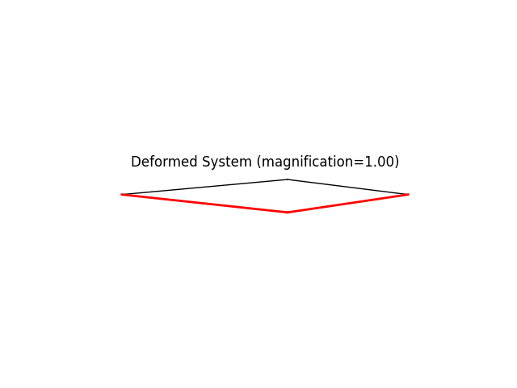
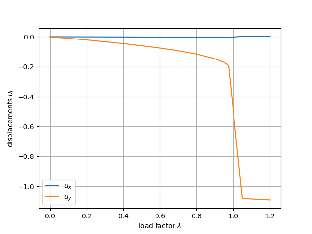
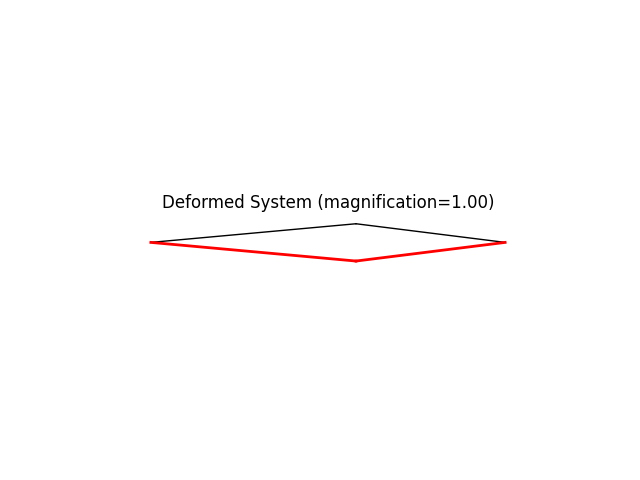
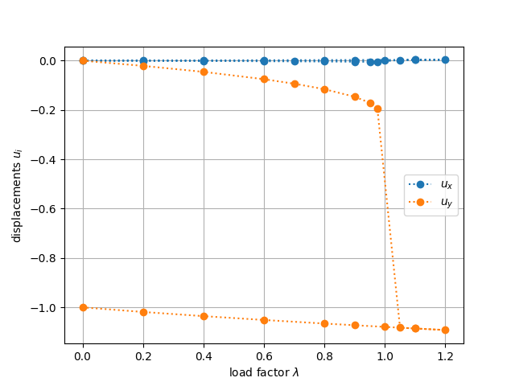

Note
Go to the end to download the full example code.
Simple triangular truss.
Study of snap-through behavior using finite deformation truss elements.
We shall be using load stepping to illustrate the limitation of this control technique.
Author: Peter Mackenzie-Helnwein
Setup
import numpy as np
import matplotlib.pyplot as plt
from femedu.examples import Example
from femedu.domain import System, Node
from femedu.elements.finite import Truss
from femedu.materials import FiberMaterial
from femedu.solver import NewtonRaphsonSolver
Create the example by subclassing the Example
class ExampleTruss05(Example):
def problem(self):
# initialize a system model
model = System()
model.setSolver(NewtonRaphsonSolver())
# create notes
x1=Node(0.0,0.0)
x2=Node(5.5,0.5)
x3=Node(9.5,0.0)
model.addNode(x1,x2,x3)
params = dict(
E = 2100., # MOE
A = 1. # cross section area
)
# create elements
elemA = Truss(x1,x2, FiberMaterial(params))
elemB = Truss(x3,x2, FiberMaterial(params))
model += elemA
model += elemB
# apply boundary conditions
x1.fixDOF(['ux','uy'])
x3.fixDOF(['ux','uy'])
# build reference load
x2.addLoad([-1.],['uy'])
# write out report
model.report()
# create plots
model.plot(factor=1., filename="truss05_deformed.png")
#
# performing the analysis
#
model.resetDisp()
# setting target load levels
levels = [0., .2, .4, .6, .7, .8, .9, .95, .975, 1.05, 1.1, 1.2]
# set up data collection
data_list = []
# reset the analysis
model.resetDisp()
# apply all load steps
for lam in levels:
model.setLoadFactor(lam)
model.solve()
# collect data
data_list.append(x2.getDisp())
# adding a plot
if np.isclose(lam, .975):
# plot the deformed shape
model.plot(factor=1.0, show_loads=False, show_reactions=False)
# plot the deformed shape
model.plot(factor=1.0, show_loads=False, show_reactions=False)
data = np.array(data_list)
plt.figure()
plt.plot(levels, data)
plt.grid(True)
plt.xlabel('load factor $ \\lambda $')
plt.ylabel('displacements $ u_i $')
plt.legend(['$ u_x $','$ u_y $'])
plt.show()
#
# adding some unloading steps
#
# setting additional target load levels
more_levels = [1.1, 1., .9, .8, .6, .4, .2, 0.0 ]
# apply all load steps
for lam in more_levels:
model.setLoadFactor(lam)
model.solve()
# collect data
data_list.append(x2.getDisp())
# plot the deformed shape
model.plot(factor=1.0, show_loads=False, show_reactions=False)
data = np.array(data_list)
plt.figure()
plt.plot(levels + more_levels, data, linestyle=':', marker='o')
plt.grid(True)
plt.xlabel('load factor $ \\lambda $')
plt.ylabel('displacements $ u_i $')
plt.legend(['$ u_x $','$ u_y $'])
plt.savefig("load-displacement.png")
plt.show()
Run the example by creating an instance of the problem and executing it by calling Example.run()
if __name__ == "__main__":
ex = ExampleTruss05()
ex.run()
- 

- 
- 
- 
- 
System Analysis Report
=======================
Nodes:
---------------------
Node_45:
x: [0.000 0.000]
fix: ['ux', 'uy']
u: None
Node_46:
x: [5.500 0.500]
P: [0.000 -1.000]
u: None
Node_47:
x: [9.500 0.000]
fix: ['ux', 'uy']
u: None
Elements:
---------------------
Truss: Node_45 to Node_46:
material properties: FiberMaterial(Material)({'E': 2100.0, 'A': 1.0, 'nu': 0.0, 'fy': 1e+30}) strain:0.0 stress:{'xx': 0.0, 'yy': 0.0, 'zz': 0.0, 'xy': 0.0}
internal force: 0.0
Truss: Node_47 to Node_46:
material properties: FiberMaterial(Material)({'E': 2100.0, 'A': 1.0, 'nu': 0.0, 'fy': 1e+30}) strain:0.0 stress:{'xx': 0.0, 'yy': 0.0, 'zz': 0.0, 'xy': 0.0}
internal force: 0.0
+
+
+
+
+
+
+
+
+
+
+
+
+
+
+
+
+
+
+
+
Total running time of the script: (0 minutes 0.684 seconds)